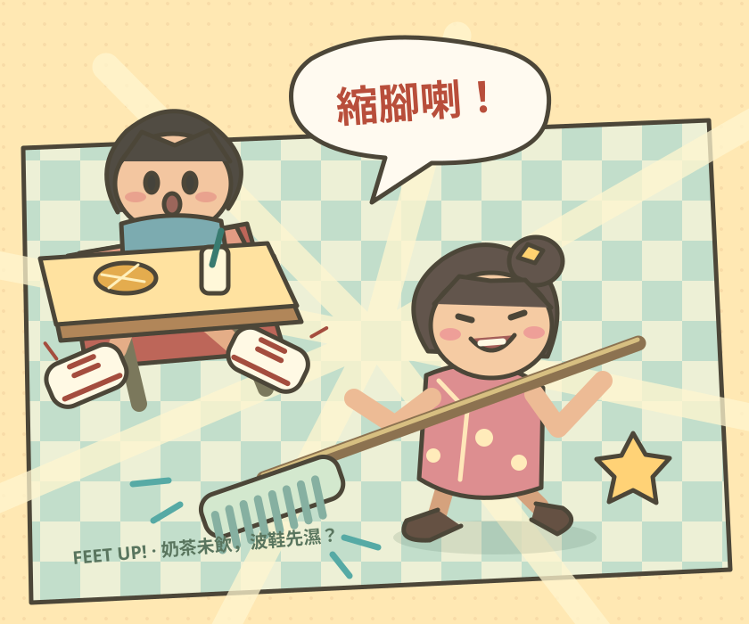

HONG KONG CAFÉ COMICS · 002利姐開工，
一地奶茶，一場腳力大戰。
茶記縮腳大亂鬥
利姐開工，
全場縮腳！
拖走打工怨氣，保住限量波鞋。今日你企邊？
100%一地奶茶，一場腳力大戰。

EST. 1988 · FEET UP, PLEASE.今日邊位開工？
01 / READY開工小抄
今日當更目標
額外挑戰，自由完成；埋單會加送小費。
按住左右腳鍵抬腳，放手落腳。按住餐牌擋水。姐姐拖動畫面控制地拖；多指同時操作，平板更鬆動。
暫時未能儲存；今次開住頁面仍可玩。
姐姐怒氣0 0%
FEET UP CAFÉ
解壓分數0
最高連擊0
完美次數0
今局小費0
小費錢罌0
當更獎金
About Feet Up Café / 玩法介紹
Feet Up Café — Hong Kong Café Action Game
Free browser game · 1 player · English / 繁體中文
Two solo modes: chain well-timed mop pokes and catch gold-ring guests, or lift your feet against four-direction attacks and finish your meal. Optional shift goals award bonus tips.
茶記縮腳大亂鬥：兩個單人模式：當利姐喊縮腳、連隊客人隻腳和追逐金圈矚目客；或當食客閃避前後左右的地拖、捉準時機縮腳，再食飽飲飽。完成當更目標有額外小費。
How to play
- Choose Auntie Li or Diner, a 60- or 90-second round, and optional café events.
- Drag and shout to poke feet, or hold the matching foot buttons to dodge and release to recover.
- Complete optional shift goals, save a top-three score for each mode and unlock cosmetic equipment.
Play in a modern phone or desktop browser with JavaScript enabled. No account or app download is required. Choose 中 / EN on the playground for Traditional Chinese or English.